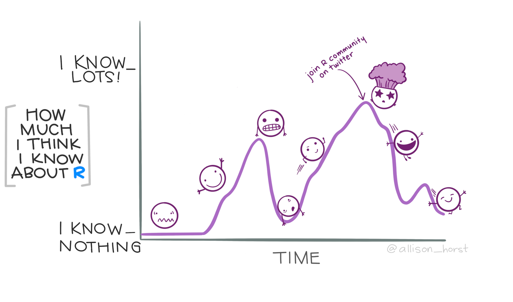

1 Getting started
Get started with crime mapping by learning about why putting crime on maps is useful, and get a tour of the Positron software we will use throughout this course.
1.1 Welcome
Welcome to Learn Crime Mapping with R. This book will help you learn about using maps and spatial analysis techniques to understand crime. Watch this video to learn more.
1.2 Why put crimes on maps?
This course is about how we can use maps and other spatial analysis tools to help understand, prevent and respond to crime. Watch this video to understand why spatial analysis is a useful tool for understanding crime.
Why is it important to map crime?
What does the law of crime concentration state?
According to research on the concentration of crime, how much crime typically happens in the 5–8% of streets or addresses with the most crime?
Why do researchers often prefer to focus on micro places, such as streets and addresses, rather than neighbourhoods?
Which of the following findings is consistent with the law of crime concentration?
Weisburd, D. (2015). The law of crime concentration and the criminology of place. Criminology, 53(2), 133-157.
Johnson, S. (2010). A brief history of the analysis of crime concentration. European Journal of Applied Mathematics, 21(4-5), 349.
Farrell, G. (2015). Crime concentration theory. Crime Prevention and Community Safety, 17(4), 233-248.
1.3 Why is crime concentrated in space?
Why is crime concentrated in space? Watch this video to find out more about how our environment influences opportunities for crime and how that causes clusters of different crimes.
Why are opportunities for crime concentrated in some places more than others?
According to the routine activities approach, which of the following is not required for a crime opportunity to occur?
What role do controllers play in preventing crime, according to the routine activities approach?
Why do different types of crime concentrate in different places?
What is a target in the context of the routine activities approach?
Santos, R. B. (2015). Routine Activity Theory: A Cornerstone of Police Crime Analyst Work. In The Criminal Act: the role and influence of routine activity theory by Andresen, M. A. and Farrell, G. Palgrave Macmillan.
Cohen, L. E., and Felson, M. (1979). Social Change and Crime Rate Trends: A Routine Activity Approach. American Sociological Review, 44(4), 588–608.
1.4 Finding your way around Positron
We will use a piece of software called Positron for almost all of this course. Positron is designed specifically for data analysis. If you have previous used either VSCode or RStudio, you will probably find Positron quite familiar, but if you haven’t used either of those before, don’t worry – we will guide you through the basics of using Positron in this course.
Watch the first three minutes of this video to find your way around the different panels in the Positron window. For now, don’t worry about opening a folder – we will cover that shortly. Also don’t worry if you don’t understand all the terms used in the video.
The Positron interface is divided into several panels, each of which has a different purpose. Some of the panels contain multiple tabs, so there are a lot of different things you can do in Positron. But on this course we will only use some of those, so it shouldn’t be overwhelming.
![Annotated screenshot of the Positron interface showing its main workspace areas. A vertical Activity bar on the far left contains icons for switching between tools. Next to it, the Primary side bar displays the Explorer, listing folders and files in the current workspace, including several Quarto (.qmd) documents. The central Editor contains an open Quarto document with tabs for multiple files, a formatting toolbar, and an editable code and text document. Beneath the editor, a Panel contains tabs including Console, Terminal, Problems, Output and Ports, with the Console tab active and showing R commands and output. On the right, the Secondary side bar contains tabs for Session, Connections, Help and Viewer. The Session tab is active, showing the R Environment with data frames and variables, while the lower portion displays a Plots pane containing a scatter plot of penguin bill length against flipper length. Coloured callout boxes identify and label each of these five interface areas: Activity bar, Primary side bar, Editor, Panel and Secondary side bar.](../images/positron-panels.jpeg)
The main panels in the Positron interface are:
- Activity bar: This vertical bar on the far left contains icons for switching between different tools in Positron. The tool shown in the screenshot above is the Explorer. In the Activity bar you can also select tools that allow you to search in files and folders, load and manage extensions to complete different tasks, and interact with online services that can help you complete your work.
- Primary side bar: This panel is next to the Activity bar and shows whatever tool is currently selected in the Activity bar. In the screenshot above, the Explorer is selected, which shows the files and folders in the folder you are working in.
- Editor: This is where you edit different files, for example to write R code to complete a particular analytical task. You can have multiple files open at once, and switch between them using the tabs at the top of the Editor.
- Panel: This panel is below the Editor and shows different types of output, for example the results of running R code, or messages about problems that have occurred. You can switch between different types of output using the tabs at the top of the Panel. Most of the time we will be working in the Console tab, which shows the results of running R code.
- Secondary side bar: This panel is on the far right and shows information about your R session, for example details about data that you have loaded (more on that in the next chapter). The bottom half of the Secondary side bar shows plots that you have created in R, and allows you to export them as image files.
The Positron Cheat Sheet highlights some of the features available in Positron and gives a list of available keyboard short-cuts. You might want to keep this cheat sheet open in a separate window while you work through the course, or print off a version to keep with you.
1.5 Keeping your files organised
Throughout this course you will use and create several different types of file, for example data files, files containing R code and output files containing maps, charts and reports. It is very important that you keep these files organised in a way that makes it easy to find them again later. Getting into the habit of keeping your files well organised will help a lot later on when you have to deal with multiple files to achieve an objective.
One of the most common mistakes that people make when writing code is not keeping their files organised. This can make it much harder to find and fix problems with your code, something we will return to in chapter Chapter 8. Make sure you organise your files well from the start (that’s right now) to avoid problems later on.
To keep your files organised, we will keep all the files used for this course in a single folder on your computer called crime-mapping, which we will then divide up into subfolders for storing different types of files. To create the crime-mapping folder in Positron:
- Click the New Folder … button in the Welcome panel.
- Choose R Project and click Next.
- Change Folder Name from
my-r-projecttocrime-mapping. Note that the folder name is all lower-case letters with a hyphen between the two words. This is important because it makes it easier to use the folder name in R later on. - Click Browse and choose a place on your computer to save the folder. You can choose any location you like, but the
Documentsfolder in your computer is usually a good choice. - Click Next.
- Leave the default options selected and click Create.
- Click Current Window.
Now that we have created a folder to store all the files for this course, we will create a few subfolders within it to keep different types of files separate. The structure of the crime-mapping folder will look like this:
These folders have different purposes:
data/is used to store all the data we will use in this course. It is divided into two subfolders:data/raw/contains the original data files exactly as they were downloaded.data/processed/contains data that have been cleaned, transformed or combined using R.
output/contains everything produced by your analysis, such as maps, charts and reports.R/will later be used to store R scripts.
The distinction between data/raw/ and data/processed/ is particularly important. Files in data/raw/ should be kept sterile. Once a file has been downloaded into this folder, you should not edit it or overwrite it. Instead, use R to read the original file, perform any cleaning or processing, and save the result into data/processed/. This means you can always return to the original data if you need to repeat your analysis. Keeping the original data sterile means that many mistakes you might make while cleaning or processing the data can be easily corrected by simply re-running your R code to produce a new processed file from the original raw file.
To create these folders in Positron:
- In the Explorer panel in the top-left corner, move the pointer over the
CRIME-MAPPINGfolder. - Click New Folder … icon (or right-click and choose
New Folder) then name the new folderdata. - Repeat steps 1 and 2 to create the
outputandRfolders. - Right click on the name of the
datafolder in the Explorer panel, click on New Folder … then name the new folderraw. Right click again on thedatafolder to create theprocessedfolder.
The explorer panel should now look like this:
![Screenshot of the Positron interface showing the Explorer panel. The workspace folder, named CRIME-MAPPING, is expanded and contains three items: a data folder, an output folder and an R folder. The data folder is also expanded to show two subfolders named processed and raw. The data folder is currently selected and the toolbar above the Explorer displays icons for creating a new file, creating a new folder, refreshing the Explorer and collapsing all folders. The screenshot illustrates the recommended folder structure for organising files in the course.](../images/positron-workspace-structure.png)
Folder and file names are easier to use in R when they contain only lower-case letters, numbers, hyphens and underscores. Avoid spaces and special characters where possible. For example, use crime-mapping rather than Crime Mapping.
1.6 In summary
Now that you know why crime mapping is useful for understanding crime, why crime is typically concentrated in space and how to find your way around Positron, in the next chapter we will produce our first crime map in R.
If you’re not feeling too confident at this point in the course, don’t worry – learning something new is always a bit of a roller coaster and there is lots of help available in subsequent chapters.
